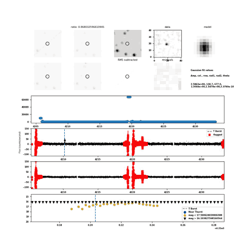

The image and light-curve panels are unchanged from the image-subtraction candidate plot. Red crosses mark cadences rejected by the existing running-RMS checks, the dashed line marks the trigger time, and the magnitude panel highlights the existing near-trigger and sensitivity selections.

Candidate
lc_GRB260618B_cand19636
Event
GRB260618B
Detector
Sector 105 Cam 2 CCD 3
Status
PASS
Detection class
multiple
Detection count
24
RMS
34.2894
Unflagged negative flux points
4097
Trigger time
2026-06-18 16:52:47.749
RA (deg)
333.639
Dec (deg)
-39.4377
Column
139.539
Row
677.894
Galactic longitude (deg)
2.00924
Galactic latitude (deg)
-55.3021
Data file
./cam2_ccd3//lcGRB/lc_GRB260618B_cand19636
Panels
The image and light-curve panels are unchanged from the image-subtraction candidate plot. Red crosses mark cadences rejected by the existing running-RMS checks, the dashed line marks the trigger time, and the magnitude panel highlights the existing near-trigger and sensitivity selections.